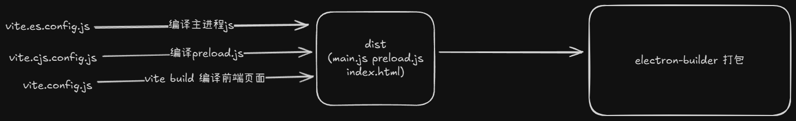

打包流程
- 对应开发环境的搭建，打包的流程也一样，先编译主进程文件，然后再编译页面文件，将这两部分都输出到同一个 dist 目录，然后再启动
electron-builder打包
{
"scripts": {
"clean": "rimraf ./dist",
"build:es": "vite build --config vite.es.config.js", // 编译主进程
"build:cjs": "vite build --config vite.cjs.config.js", // 编译 preload.js
"build:vite": "npm run clean && npm run build:es && npm run build:cjs",
"build:electron": "electron-builder build", // electron-builder 打包
"build": "npm run build:vite && electron-builder build",
},
}
// demo 这里没有使用前端框架作为渲染进程页面的开发，如果使用了前端框架，那就在 build 命令中 electron-builder 打包之前再加上一条编译前端页面的命令即可

- 下面是 vite.es.config.js 编译主进程的 vite 配置
import { defineConfig, normalizePath } from 'vite';
import path from 'path';
import { nodeResolve } from '@rollup/plugin-node-resolve';
import commonjs from '@rollup/plugin-commonjs';
import { viteStaticCopy } from 'vite-plugin-static-copy';
// 主进程中用到的 node 原生模块
const nodeBuiltins = [
'node:http',
'node:https',
'node:fs',
'node:fs/promises',
'node:path',
'node:url',
'node:child_process',
'module',
];
export default defineConfig({
root: path.resolve(__dirname, 'src/main'), // 项目根目录，主进程 js 所在目录
plugins: [
// 使用插件将渲染进程 html 相关文件复制到 dist 目录中
viteStaticCopy({
targets: [
{
src: normalizePath(path.resolve(__dirname, 'src/renderer/*')),
dest: './',
},
],
}),
],
build: {
outDir: path.resolve(__dirname, 'dist'), // 输出路径
emptyOutDir: false, // vite 编译前是否先清空输出目录下所有文件，这里选择 false 以防和复制 html 文件的行为互相冲突
target: 'node22', // 最终编译结果兼容什么环境
lib: {
// 以库的形式构建
entry: ['index.ts'], // 入口 js 文件
formats: ['es'], // 使用 esm 模块
fileName: (format, entryName) => {
// 输出的最终文件名
return `${entryName}.js`;
},
},
rollupOptions: {
external: [
// 排除在 bundle 外部的模块，这些模块是原生模块或者不想被打包到最终js文件中的模块
...nodeBuiltins,
'electron',
'electron-log',
'dotenv',
'electron-updater',
'iconv-lite',
'better-sqlite3',
],
plugins: [
/**
* @rollup/plugin-node-resolve 插件的主要职责是帮助 Rollup 解析和处理 Node.js 风格的模块导入语句。在 Node.js 环境中，模块可以通过相对路径、绝对路径、npm 包名（如 import something from 'my-package'）等多种方式进行导入。然而，Rollup 默认仅支持 ES 模块导入（即通过相对或绝对路径导入本地文件）。使用 @rollup/plugin-node-resolve 插件后，Rollup 能够识别并正确处理 Node.js 的模块导入机制，包括解析 node_modules 目录下的依赖包以及处理 package.json 中的 main、module、browser 等字段。
*/
nodeResolve({
preferBuiltins: true, // 优先解析为 node 原生模块
browser: false, // 不使用浏览器模块的解决方案
}),
// @rollup/plugin-commonjs 用于将 node_modules 中的 commonjs 包转换成 esm 模块，这样就能够被打包到最终 js 文件中
commonjs({
include: /node_modules/, // 告诉插件处理 node_modules 中的模块
esmExternals: true, // 假设所有模块都是 esm 模块
}),
],
output: {
entryFileNames: 'index.js', // 入口文件
format: 'es', // 打包成 esm 模块
externalLiveBindings: true, // 为外部依赖生成动态绑定的代码
globals: {
// 为外部依赖指定全局变量名
electron: 'electron',
},
sourcemap: true, // 开启 sourcemap
sourcemapExcludeSources: true, // 如果为 true 实际源代码将不会被添加到 sourcemap 文件中
},
},
},
});
- 下面是 vite.cjs.config.js 编译 preload.js
import { defineConfig, normalizePath } from 'vite';
import path from 'path';
import { nodeResolve } from '@rollup/plugin-node-resolve';
export default defineConfig({
root: path.resolve(__dirname, 'src/main'), // 项目根目录，preload.js 所在目录
build: {
outDir: path.resolve(__dirname, 'dist'), // 输出路径
emptyOutDir: false, // vite 编译前是否先清空输出目录下所有文件
target: 'node22', // 最终编译结果兼容什么环境
lib: {
entry: ['preload.ts'], // 入口文件
formats: ['cjs'], // 输出为 commonjs 模块
fileName: (format, entryName) => {
// 输出文件名
return `${entryName}.js`;
},
},
rollupOptions: {
external: ['electron'], // 排除在 bundle 外部的模块
plugins: [
// 解析 nodejs 风格的模块导入
nodeResolve({
preferBuiltins: true,
browser: false,
}),
],
output: {
entryFileNames: 'preload.js', // 入口文件
format: 'cjs', // 输出为 commonjs 模块
},
},
},
});
下面是关键，package.json 中的 electron-builder 配置
{
"build": {
"appId": "update.test", // 应用id
"productName": "hahazexia", // 产品名
"directories": {
"output": "out" // 打包输出目录
},
"publish": [ // 为自动更新设置下载服务器地址
{
"provider": "generic", // 自定义服务
"url": "http://127.0.0.1:33855/" // 升级接口地址
}
],
"win": { // 打包目标平台和安装包格式
"target": "nsis"
},
"nsis": { // nsis 配置
"oneClick": false, // 是否生成一键安装包
"perMachine": true, // 是否为每个用户安装应用（显示安装模式页面）
"warningsAsErrors": false, // nsis 允许 warning 存在
"createDesktopShortcut": "always", // 创建桌面图标
"allowToChangeInstallationDirectory": true, // 允许用户修改安装路径
"artifactName": "${productName}_v${version}.exe", // 安装包文件名
"license": "./mxy_SoftwareLicence.txt", // 安装包协议页显示内容
"installerIcon": "./icon.ico", // 安装包图标
"uninstallerIcon": "./icon.ico", // 卸载图标
},
"electronDownload": { // 打包过程中下载 electron 的镜像地址
"mirror": "https://registry.npmmirror.com/binary.html?path=electron/"
},
"files": [ // 打包的文件列表
"**/*",
".env",
"package.json",
"!nsis_publish/**/*",
"!out/**/*",
"!public",
"!src",
"!.gitignore",
"!afterAllArtifactBuild.cjs",
"!afterPack.cjs",
"!beforePack.cjs",
"!*.ico",
"!installer.nsi",
"!License.txt",
"!out.log",
"!package-lock.json",
"!README.md",
"!Readme.txt",
"!server.js",
"!sha512.js",
"!tsconfig.*.json",
"!tsconfig.json",
"!update.json",
"!vite.*.config.ts",
"!*.exe"
],
"afterPack": "./afterPack.cjs" // 钩子函数文件
}
}